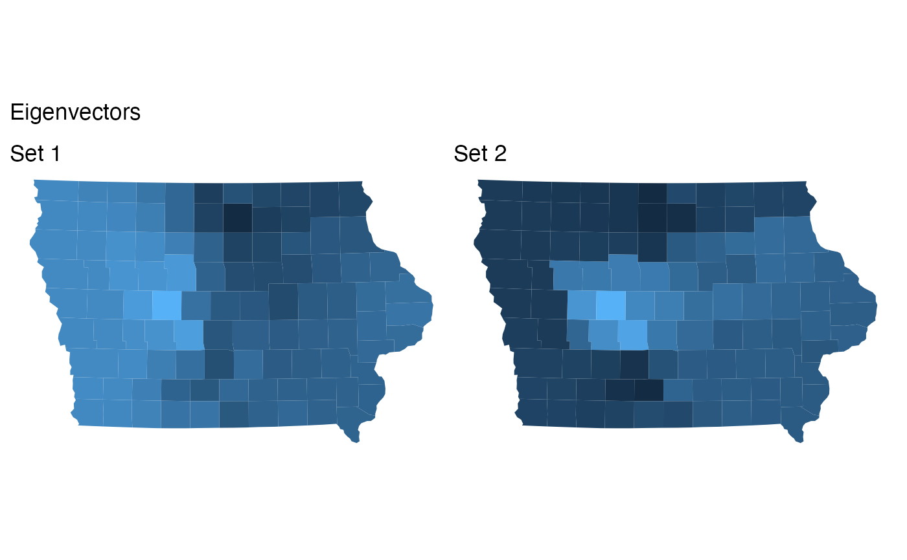
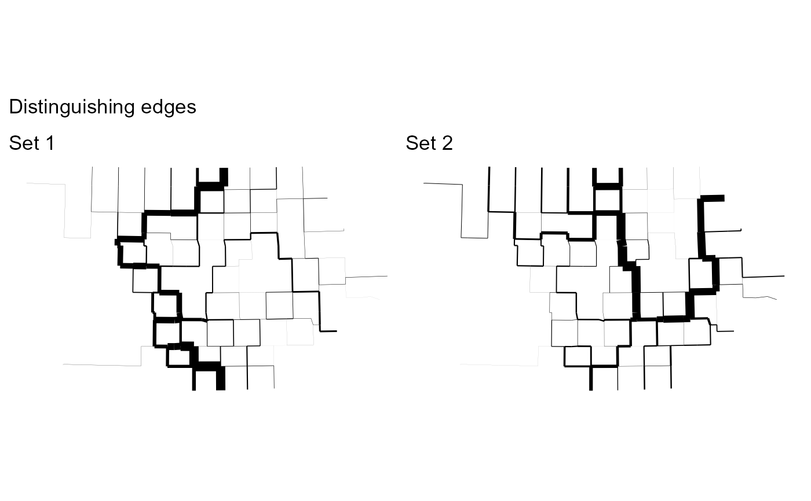

This function provides one way to identify the structural differences between two sets of redistricting plans. It operates by computing the precinct co-occurrence matrix (a symmetric matrix where the i,j-th entry is the fraction of plans where precinct i and j are in the same district) for each set, and then computing the first eigenvalue of the difference in these two matrices (in each direction). These eigenvalues identify the important parts of the map.
compare_plans(
plans,
set1,
set2,
shp = NULL,
plot = "fill",
thresh = 0.1,
labs = c("Set 1", "Set 2"),
ncores = 1
)a redist_plans object
<data-masking> indexing vectors
for the plan draws to compare. Alternatively, a second redist_plans
object to compare to.
<data-masking> indexing vectors
for the plan draws to compare. Must be mutually exclusive with set1.
a shapefile for plotting.
If plot="line", display a plot for each set showing the set of
boundaries which most distinguish it from the other set (the squared
differences in the eigenvector values across the boundary). If
plot="fill", plot the eigenvector for each set as a choropleth. If plot = 'adj',
plot the shows the adjacency graph edges which most distinguish it from the other set.
The adj option is a different graphical option of the same information as the line
option. See below for more information. Set to FALSE to disable plotting
(or leave out shp).
the value to threshold the eigenvector at in determining the relevant set of precincts for comparison.
the names of the panels in the plot.
the number of parallel cores to use.
If possible, makes a comparison plot according to plot. Otherwise
returns the following list:
A numeric vector containing the first eigenvector of
p1 - p2, where p1 and p2 are the co-occurrence matrices
for set1 and set2, respectively.
A numeric vector containing the first eigenvector of
p2 - p1, where p1 and p2 are the co-occurrence matrices
for set1 and set2, respectively.
Lists of precincts. Compared to set2, in the
set1 plans these precincts were much more likely to be in separate
districts. Computed by thresholding eigen1 at thresh.
Lists of precincts. Compared to set1, in the
set2 plans these precincts were much more likely to be in separate
districts. Computed by thresholding eigen2 at thresh.
The difference in the average co-occurrence of precincts
in group_1a and group_1b between set2 and set1.
Higher indicates better separation.
The difference in the average co-occurrence of precincts
in group_2a and group_2b between set1 and set2.
Higher indicates better separation.
The co-occurrence matrices are regularized with a \(Beta(1/ndists, 1-1/ndists)\)
prior, which is useful for when either set1 or set2 is small.
data(iowa)
iowa_map <- redist_map(iowa, ndists = 4, pop_tol = 0.05)
plans1 <- redist_smc(iowa_map, 100, silent = TRUE)
plans2 <- redist_mergesplit(iowa_map, 200, warmup = 100, silent = TRUE)
compare_plans(plans1, plans2, shp = iowa_map)

compare_plans(plans2, as.integer(draw) <= 20,
as.integer(draw) > 20, shp = iowa_map, plot = "line")
